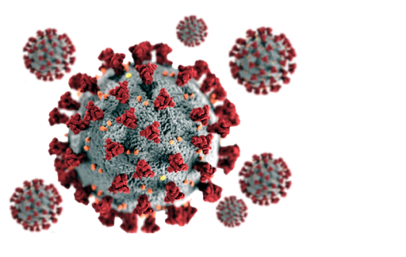
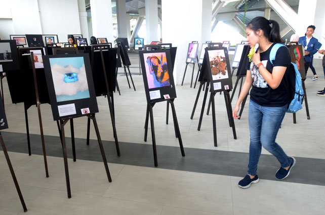
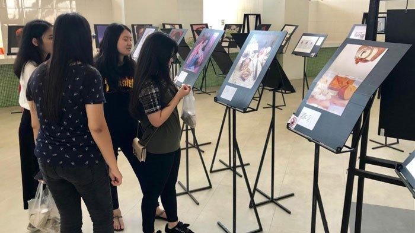

News Update
Headline
Pergantian Ketua UKM Fotografi

Pada tanggal 17 Juli 2018, Ketua dari UKM fotografi telah lengser dari jabatan dan digantikan oleh ketua ukm yang baru.
Jonathan Joestar adalah nama dari ketua Ukm Fotografi periode 2018 - 2019
dengan visi dan misi yang tentunya lebih baik dari periode-periode sebelumnya. Jonathan Joestar yang kerap disapa Jojo merupakan mahasiswa Ma Chung prodi Manajemen angkatan 2018.
Berita hangat
Pemenang lomba fotografi 2020
Lomba fotografi 2020 yang diselenggarakan pada tanggal 15 Agustus 2020 kemarin yang diikuti seluruh mahasiswa
dengan hobi fotografi telah dimenangkan oleh peserta dari Universitas Ma Chung dan memperoleh juara 1.
Adanya COVID19 - tidak menghalangi hobi mahasiswa
Adanya Pandemi COVID19 yang melanda seluruh dunia, dan tidak terkecuali Indonesia juga terkena dampak
dari pandemi COVID19, ini tidak menghalangi hobi mereka. Tapi tetap dihimbau untuk mematuhi protokol kesehatan
agar para mahasiswa tidak terjangkit.
Berita Populer
Pemenang lomba fotografi 2019
Lomba fotografi 2020 yang diselenggarakan pada tanggal 18 september 2019 kemarin yang diikuti seluruh mahasiswa
Rudyantara Anugrah TIF'19 merupakan pemenang dari lomba fotografi ini dengan voting 432/760 mahasiswa yang memilih.
Pameran lomba fotografi 2019
 Pameran lomba fotografi 2019 yang diselenggarakan pada tanggal 18 september 2019 kemarin yang diikuti seluruh mahasiswa Ma Chung
pameran diselenggarakan di Balai Pertiwi di Universitas Ma Chung. dihadiri oleh hampir seluruh dosen, rektor, dan mahasiswa.